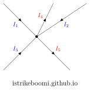

This note will be building upon the previous introducing more circuit laws and terminology
The first main law we have established is Ohm's Law $V = IR$
Circuit Terminology
Take a look at this "complex" circuit

We can't use ohm's law directly here because there are multiple resistors and voltage sources
We can break this circuit down into smaller parts using Nodes, Loops, and Meshes
A Node is any point in the circuit where two or more components connect
Think of it as the number of independent shorts/wires in the circuits
A Loop is any closed path in the circuit (only consider components on the outside)
A Mesh is a loop that does not contain any other loops inside of it
There is a formula for Meshes, $\text{Meshes} = \text{Components} - \text{Nodes} + 1$
If we count the amount of nodes, loops and meshes in the above circuit
We get 5 nodes, 6 loops, and 3 meshes
We get 5 nodes because there are 5 independent shorts (boxed in blue)

There are 6 loops
- $V_{in1}$ to $R_4$ to $R_1$
- $R_1$ to $R_2$ to $R_5$
- $V_{in2}$ to $R_3$ to $R_2$
- $V_{in1}$ to $R_4$ to $R_2$ to $R_5$
- $V_{in2}$ to $R_3$ to $R_5$ to $R_1$
- $V_{in1}$ to $R_4$ to $V_{in2}$ to $R_3$ to $R_5$

This is cluttered so we can split this into the 3 smaller loops, 2 medium loops, and the other loop


Finally we have 3 meshes

You might notice the 3 smaller loops are the meshes
We can also use the formula above for meshes (there are 5 resistors and 2 voltage sources so 7 components)
So $3 = 7 - 5 + 1$ which is correct
Polarity and Positive/Negative Voltage and Current
When analyzing circuits its important to keep track of voltage and current directions
By convention voltage sources have a positive and negative terminal (called the polarity)
Current is considered to flow from the positive terminal to the negative terminal of a voltage source
For a resistor the positive side is the terminal where current enters, negative where current leaves
This is called Conventional Current Flow
When current flows through a resistor there is a voltage drop across the resistor
This means the terminal where current enters the resistor is at a higher voltage
Than the terminal where current leaves the resistor
This is why to find the voltage across a resistor, you need to do the difference of each side
$$V_R = V_{in} - V_{out}$$ $V_{in}$ is the voltage at the terminal where current enters
$V_{out}$ is the voltage at the terminal where current leaves
If current flows in the opposite direction of what you assumed, the current will be negative
If voltage is measured in the opposite direction of what you assumed, the voltage will be negative
This just means that negative current and voltage is backwards (this is fine)
Here is a diagram showing resistor polarity and how it relates to current and voltage

Note that resistors don't inheritly have polarity
The location of the plus and minus signs depend on the current
KCL and KVL
The next 2 extremely important laws for circuits are KCL and KVL
KCL or Kirichoff's Current Law says the sum of the currents entering and leaving a node is 0
In other words the currents entering a node equal the currents leaving a node
Expressed Mathematically:
$$\sum I_{in} = \sum I_{out}$$ or $$\sum I = 0$$
This is because charge cannot build up at a node
Here is a digram to represent it
The currents entering are $I_1,I_2,I_3$ and the currents leaving are $-I_4,-I_5$ (negative because they are leaving)
$$I_1 + I_2 + I_3 - I_4 - I_5 = 0 \text{ or } I_1 + I_2 + I_3 = I_4 + I_5$$
KVL or Kirchhoff's Voltage Law says the sum of the voltages around any closed loop is 0
In other words the sum of voltage rises equal the sum of voltage drops around a loop
Expressed Mathematically:
$$\sum V_{rise} = \sum V_{drop}$$ or $$\sum V = 0$$
This is because energy cannot be created or destroyed in a closed loop
Heres an example diagram
This circuit has 3 loops so we can make 3 KVL equations ($V_{R_1}$ and $V_{R_2}$ are the voltages across $R_1$ and $R_2$)
$$\begin{align} V_{in1} + V_{R_1} + V_{R_2} &= 0 \\ V_{in2} + V_{R_1} &= 0 \\ V_{in1} + V_{in2} + V_{R_2} &= 0 \end{align}$$
We can also make the KCL equations for the 3 nodes (use Ohm's law $I = V/R$ for current across resistors)
These 2 laws are extremely important for analyzing circuits
Later on we will assign values to the voltage source and resistors and solve for currents/voltages
$$\begin{align} I_{V_{in1}} + \frac{V_{R_1}}{R_1} + I_{V_{in2}} &= 0 \\ I_{V_{in2}} + \frac{V_{R_1}}{R_1} + \frac{V_{R_2}}{R_2} &= 0 \\ I_{V_{in1}} + \frac{V_{R_2}}{R_2} &= 0 \end{align}$$
Series And Parallel Circuits
There are a few ways to connect components in a circuit, Series, Parallel, or neither
Components have to have 2 ends (a positive and negative) so they can make a closed circuit
Components are in Series if they solely share a node (no other component connected to that node)
Components are in Parallel if they share both nodes (connected to the same two nodes)
Knowing if components are in series or parallel is important for analyzing circuits
This is because we can (depending on the component) combine components using some formula
You can also be in series or parallel with shorts by treating them as $0$ ohm resistors
Being in series with a short doesn't mean much but being in parallel with a short is important
Find which components are in series or parallel in the following circuits

First for series components
- $R_5$ and $R_6$ are in series
- $R_6$ and $V_{in1}$ are in series
- $V_{in1}$ and $R_1$ are in series
Next for parallel components
- $R_2$, $R_3$, $R_4$, are in parallel
- $R_7$ and the short it is on are in parallel
Heres the same circuit above labeled (blue rectangles show series and red rectangles show parallel)

One reason why we care about series and parallel circuits is using KCL and KVL we can show the following
Voltage is the same across components in parallel
Current is the same across components in series
This is extremely important and makes it easier to analyze circuits
Summary
The 3 main laws for electrical circuit analysis are
- Ohm's Law $V=IR$
- KCL $\sum I = 0$ at a node
- KVL $\sum V = 0$ in a loop
Nodes are the whole wire/short where components connects
A Loop a closed path
Components in Series exclusivley share a node
Components in Parallel share the same top node and same bottom node
Voltage in Parallel is the same and current in series is the same
Voltage in Series and current in parallel may be different
Voltage and current flow out of a voltage source from the + end and back through the - end
Voltage and current flow into a resistor from the + end and back through the - end
Practice Problems
-
For the following circuit, find the components in series and parallel and generate KCL and KVL equations

$R_2$ and $V_{in}$ are in series
$R_1$ and $R_3$ are in parallel
There are 3 loops
$V_{in} + V_{R_1} + V_{R_2} = 0$
$V_{in} + V_{R_3} + V_{R_2} = 0$
$V_{R_1} + V_{R_3} = 0$
There are 3 nodes
$I_{V_{in}} + \frac{V_{R_1}}{R_1} + \frac{V_{R_3}}{R_3} = 0$
$\frac{V_{R_1}}{R_1} + \frac{V_{R_2}}{R_2} + \frac{V_{R_3}}{R_3} = 0$
$I_{V_{in}} + \frac{V_{R_2}}{R_2}= 0$
-
For the following circuit, find the components in series and parallel and generate KCL and KVL equations

No components are in series
$R_1$, $R_2$, and $V_{in1}$ are in parallel
Notice how $V_{in2}$ is not part of hte circuit because there is no wire connecting the negative end
That means it's not part of a loop
There are 3 loops
$V_{in1} + V_{R_1}= 0$
$V_{in1} + V_{R_2} = 0$
$V_{R_1} + V_{R_2} = 0$
There are 2 nodes
Since $V_{in2}$ isn't a complete circuit, the current it contributes is 0
$I_{V_{in1}} + \frac{V_{R_1}}{R_1} + \frac{V_{R_2}}{R_2} = 0$
$I_{V_{in1}} + \frac{V_{R_1}}{R_1} + \frac{V_{R_2}}{R_2} = 0$
-
For the following circuit, find the components in series and parallel and generate KCL and KVL equations

No components are in series or parallel
Notice how $R_3$ and $R_4$ are in parallel with the wire itself
Since voltage is same in parallel, the voltage of the wire is the voltage of the resistors
But the voltage of a short is 0 (because it's resistance is 0 ohms and $V = 0\times R = 0$)
Since there is no voltage across $R_3$ and $R_4$, theres nothing to move current, so its current is 0 amps
This means we can just rid of them since they dont contribute

This gives an easier circuit and now we notice $R_1$, $R_2$ and $V_{in}$ are in parallel
There are 3 loops
$V_{in} + V_{R_1}= 0$
$V_{in} + V_{R_2} = 0$
$V_{R_1} + V_{R_2} = 0$
There are 2 nodes
$I_{V_{in}} + \frac{V_{R_1}}{R_1} + \frac{V_{R_2}}{R_2} = 0$
$I_{V_{in}} + \frac{V_{R_1}}{R_1} + \frac{V_{R_2}}{R_2} = 0$